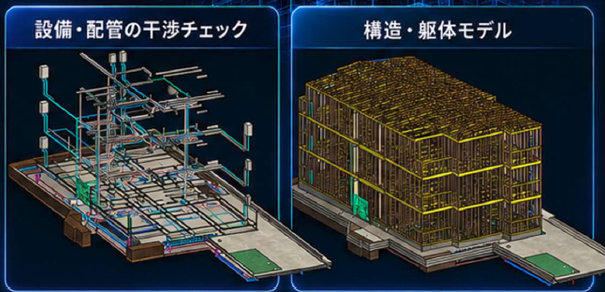

人手不足のなか、信頼して任せられる現場監督に集中する負担を減らしたいWe want to ease the workload of trusted site managers amid staff shortages.
DESIGN × CONSTRUCTION BIM
BIM keeps the job site running
Construction BIM
現場で使えないBIMなら、ない方がマシだ。If BIM cannot keep the site moving,
it is better not to have it.
図面を施工BIMで組み立て、不整合と未決定事項を先回りして整理。Tojo nexusは、監督の「判断の手前」を整えます。
We prepare the information. Your site makes the decisions.
- Founded
- 2026
- Sites
- 神戸 / ダナンKobe / Da Nang
- Focus
- 施工BIM × 現場支援Construction BIM / Field support
Our approach
監督の仕事は、
判断すること。More time for the decisions that matter.
業者との施工打ち合わせや、設計・仕様を決める打ち合わせ。
納まりを伝えるために、その都度、監督が図面を描き、説明用の資料をつくる。
打ち合わせの準備に、時間を取られていませんか。
施工BIMなら、一度整えたモデルから、必要な箇所の平面図・断面図・3D画像を取り出し、図面や資料へすばやく展開できます。寸法や注記を整え、変更もモデルに反映して、次の打ち合わせに使い続ける。毎回描き直す手間を減らし、検討と判断に時間を使える状態をつくります。
Tojo nexusは、図面の食い違いや未決定事項も整理し、確認が必要な箇所を図面・3D・質疑として共有します。
BIMを「作る」ではなく、BIMで「止めない」。
- 01
図面を組み立てる
Revitで建築・構造・設備を立体化。
- 02
判断が必要な箇所を整理する
不整合・干渉・未決定事項を可視化。
- 03
現場で使える情報に整える
図面・3D・質疑を、判断しやすい形へ。
Issues
こんな課題、感じていませんか。Do any of these sound familiar?
ひとつでも当てはまるなら、状況整理からで構いません。
打ち合わせのたびに、監督が説明用の図面や資料を作り直しているThe site supervisor redraws details and prepares new documents for every meeting.
図面の不整合で、現場が止まるDrawing conflicts stop the site.
未決定事項が工事中に発覚し、現場が止まるUndecided items surface mid-construction.
変更の影響を追うだけで、確認に時間がかかるTracing the impact of changes takes too much time.
BIMを導入したいが、社内に専門人材がいないBIM is needed, but the specialists are not in-house.
モデルはあるのに、現場の打ち合わせに使えないThe model exists, but it does not help site meetings.
Service
現場が判断できるBIMだけを渡す。We deliver BIM the site can actually decide from.
構造と設備を重ね、図面だけでは見えにくい取り合いまで確認します。

Before construction
現場で気づく前に、
モデルで気づく。
配管と梁の干渉。図面ごとに異なる寸法。未確定の高さや納まり。工事を進めるために確認が必要なことを、先に共有します。
施工BIMでできることを見る01 Modeling
BIMモデリング・検図
Build the model. Surface the questions.
2D図面からRevitで施工BIMを作成。建築・構造・設備を統合し、図面の不整合や干渉、未決定事項を整理します。
02 Information
図面・数量・打ち合わせ
One model, ready for the next discussion.
一度整えたモデルから、必要な平面図・断面図・3D画像を打ち合わせ資料へ展開。図面を毎回描き直す手間を減らし、モデルの範囲と条件に応じた数量整理も支えます。
03 Field partner
現場の進行に合わせた支援
Support that continues beyond delivery.
納品後も現場の進行に合わせて、変更や追加の確認事項を整理。監督が判断に集中できるよう、その都度サポートします。
現場の言葉で要件を整理し、制作と確認をつなぎます。
サービスの詳細Partner
判断の手前を、
引き受ける。We prepare the ground for your decisions.
成果物を渡して、終わりではありません。
現場で判断できる状態まで整え、現場の進行に合わせて並走します。
信頼する監督が、必要な判断に集中できること。
その時間を、会社と現場に取り戻します。
「BIMで現場を止めない。
BIMで技術者を守る。
BIMで日本の建設を前に進める。」Keep the site moving. Protect the people who build.
Move Japanese construction forward.
代表取締役 東條 浩幸 / Hiroyuki Tojo, CEO
Tojo nexusについてField guides
施工BIMを、現場でどう使うか。
01 / Coordination
配管と梁の干渉を、
判断できる質疑にする。
干渉チェックで見るところ、指摘のまとめ方、依頼前に揃える図面を解説します。
02 / Meetings
打ち合わせのたびに、
図面を描き直さないために。
一つの施工BIMから平面・断面・3D画像へ。次の打ち合わせに情報をつなぐ方法です。
Contact
状況整理だけでも、
構いません。
WEB会議で現場の状況を伺い、
どこまでお手伝いできるかを一緒に整理します。